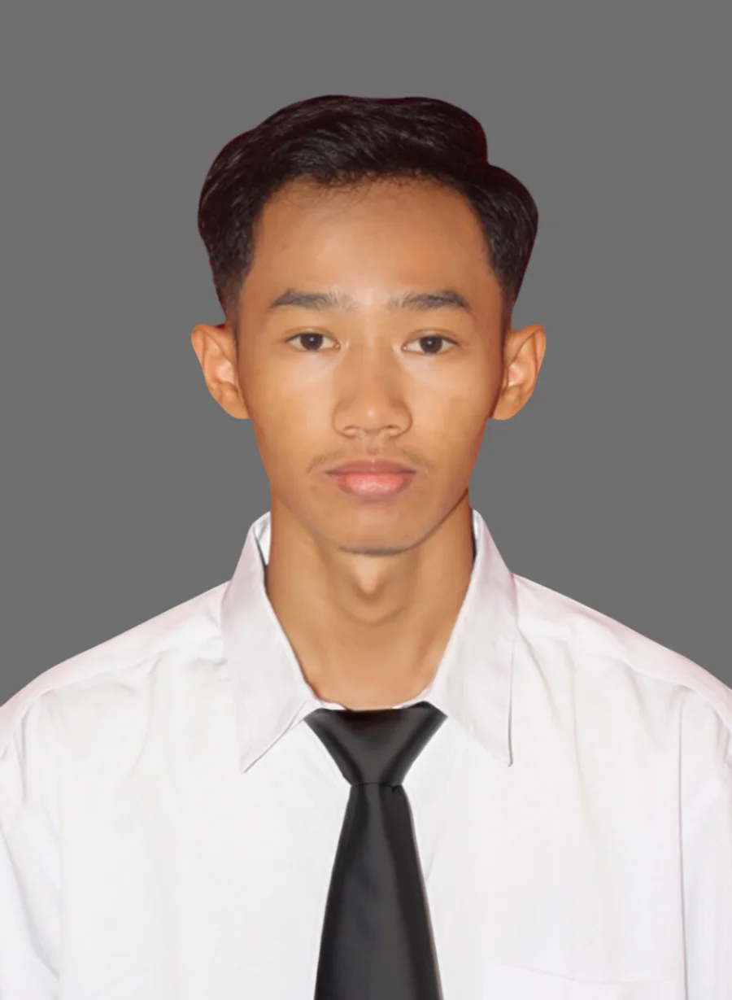
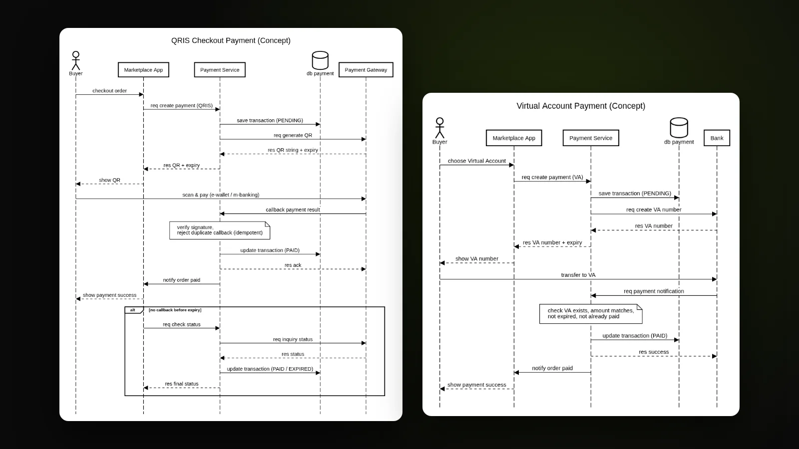
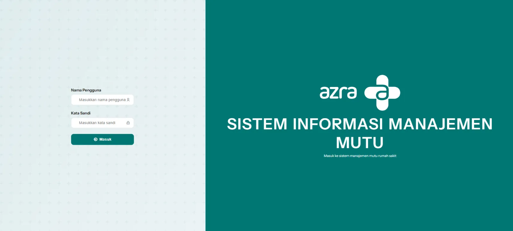
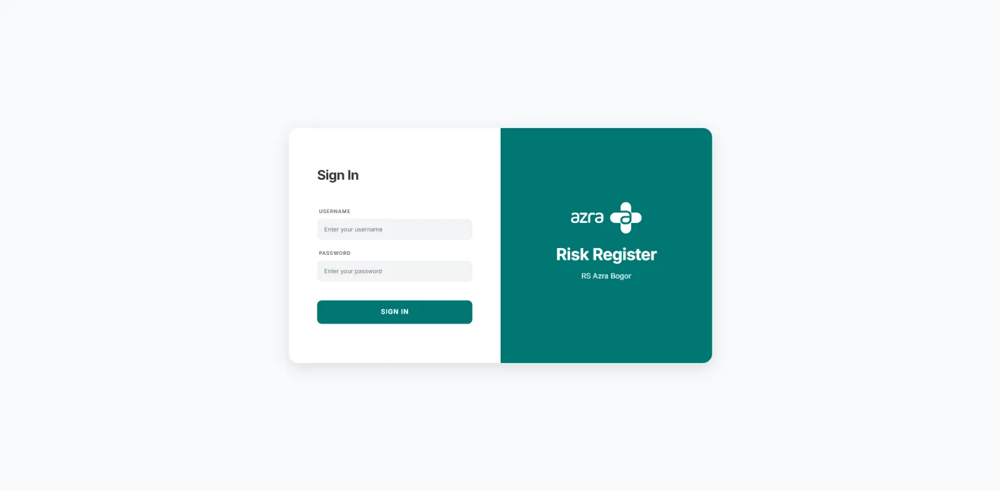
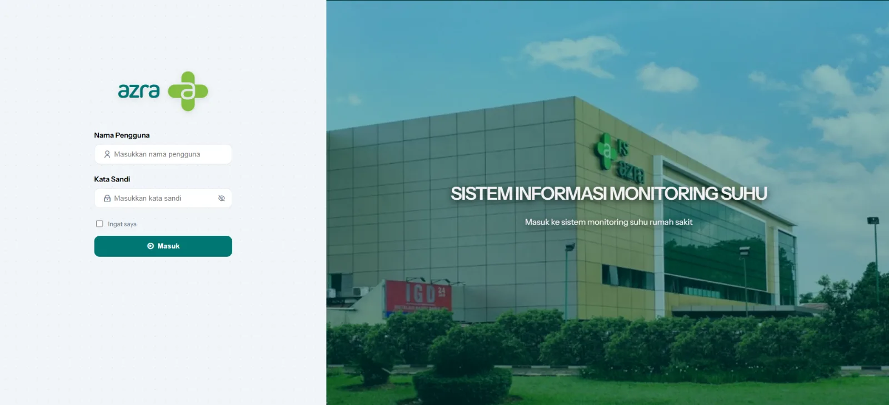
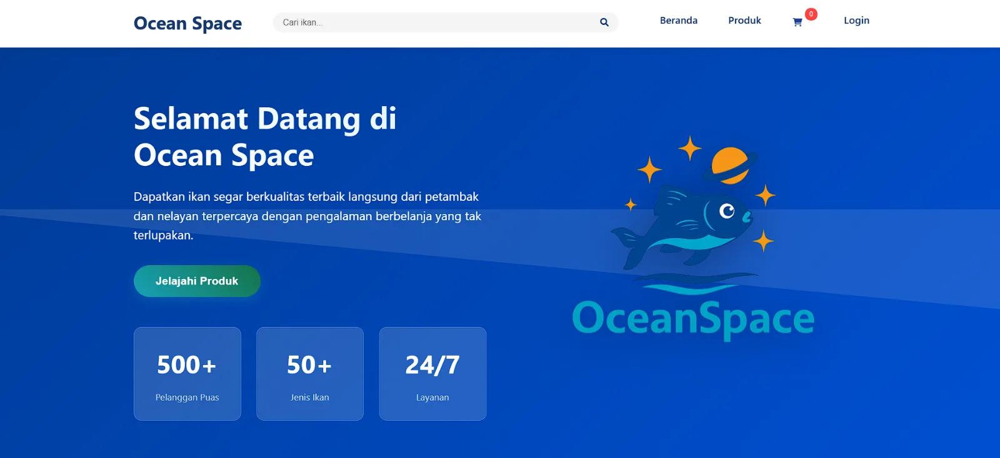
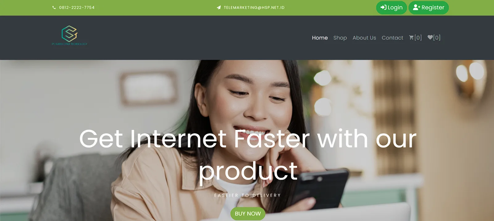

System Analyst · Fintech & Payment Systems
Menjembatani kebutuhan bisnis dan tim teknis melalui requirement, alur sistem, dan spesifikasi API yang terstruktur. Didukung latar belakang sebagai developer, setiap rancangan disusun agar dapat diimplementasikan dan dioperasikan dengan baik.

Saya bekerja di antara tim bisnis dan engineering: mengumpulkan requirement, merancang alur sistem dan sequence diagram, menyusun dokumen teknis seperti Terms of Reference (TOR), spesifikasi API, dan test scenario, serta memastikan yang dibangun sesuai dengan yang dibutuhkan.
Sebelum fokus di analisis, saya membangun aplikasi Laravel untuk e-commerce dan operasional rumah sakit, serta mengelola server dan jaringan. Latar belakang itu membantu saya merancang solusi yang bisa dibangun developer, dijalankan tim operasional, dan diintegrasikan partner.
Menerjemahkan kebutuhan bisnis menjadi requirement yang jelas dan bisa diuji
Alur sistem, sequence diagram, ERD, dan spesifikasi API
Terms of Reference, test scenario, dan risk analysis
Rancangan yang realistis untuk dibangun, di-deploy, dan dipelihara
PT Finnet Indonesia – Jakarta
RS Azra – Bogor, Jawa Barat
PT Parsaoran Global Datatrans – Ciracas, Jakarta Timur
PT Carlwig – Depok, Jawa Barat
Proyek pilihan, disajikan dengan cara saya mendekati setiap sistem: masalah, requirement, desain, dan hasilnya.

Mengganti konfirmasi transfer manual dengan pembayaran QRIS dan Virtual Account otomatis: requirement, sequence diagram, spesifikasi API, test scenario, dan risiko.

Pelaporan indikator mutu unit rumah sakit: target fleksibel, validasi, analisis per periode, dan tindak lanjut PDSA dengan status persetujuan.

Risk register berbasis spreadsheet yang diterjemahkan menjadi sistem empat tahap: identifikasi, analisis dan penilaian, rencana penanganan, dan evaluasi risiko residual.

Pencatatan suhu dan kelembapan per titik pantau, dengan dashboard yang menandai nilai di luar rentang standar tiap parameter.

E-commerce untuk usaha ikan dengan pembayaran Midtrans dan sisi admin untuk produk, pesanan, pembelian stok, dan kasir, dirancang dengan use case, activity, dan class diagram.

E-commerce B2B untuk PT Surya Citra Teknologi, dipetakan dengan use case, class, dan sequence diagram sebelum development.
Analisis & Dokumentasi Requirement elicitation, Terms of Reference (TOR), Functional Specification, Test Scenario & UAT, Risk Analysis
System Design UML (Use Case, Activity, Sequence, Class), ERD, REST API Specification, Mockup — Draw.io, Figma, Postman
Domain Integrasi fintech & payment (payment gateway, QRIS, API bank), sistem operasional rumah sakit
Database MySQL, PostgreSQL, SQL
Development PHP, Laravel, HTML, CSS, JavaScript, Bootstrap, TailwindCSS, Git
Infrastruktur & Jaringan Linux, Webmin, Mikrotik, Cisco
Informatika - Fakultas Teknologi Industri
Teknik Komputer dan Jaringan
Certificate of Competence (Junior Web Programming)
Jun 2025Certificate of Training (Basic Web Application Development)
Mei 2025Certificate of Training (Basic Web Application Design)
Sep 2024Certificate of Training (Wide Area Network Using Mikrotik Router For Intermediate)
Feb 2024Certificate of Training (Local Area Network Using Mikrotik Router)
Agu 2023Certificate of Training (Fundamental Networking)
Feb 2023Certificate of Training (Fundamental Server OS)
Feb 2022Certificate of Competence (Computer Network Services)
Apr 2025Certificate of Training (Build a Wireless Network Portal Using Mikrotik Hotspot)
Sep 2019